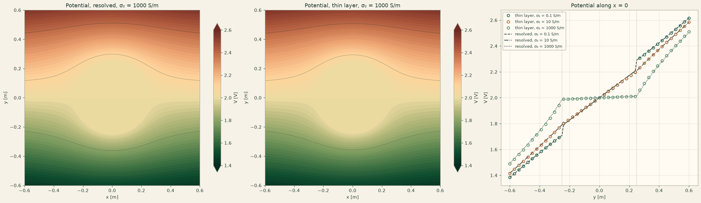
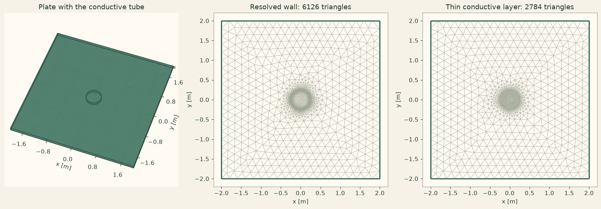

Docs › Examples › Electric shielding by a thin conductive shell
Electric currents · 2D
Electric shielding by a thin conductive shell
A steady current flows through a conducting plate around a tube whose 1 cm wall conducts up to a thousand times better than the plate; the wall is resolved once and replaced by a thin conductive layer once.
Run locally with OneSimulation. The example downloads are free. Running them requires an activated runtime. Runtime Alpha 0.2.1a7 · CPython 3.13 on macOS (Apple Silicon), Ubuntu 22.04 (x86-64), and Windows x64. Installation and activation · View pilot plans. Scope of the reference checks.


What it computes
OneSimulation reads the plate and the tube from STEP files, cuts them to their mid-plane and solves the steady current equation with quadratic triangles. The resolved model meshes the wall as its own region; the thin model carries the current along the mid-line of the wall with the sheet conductance and across it with the normal conductance, on a mesh with less than half the elements. The script that builds the STEP files comes with the notebook.
What it checks
For wall conductivities of 0.1, 10 and 1000 S/m in a 1 S/m plate the field inside the tube is 0.827, 0.830 and 0.047 times the applied field with the thin layer, against 0.861, 0.865 and 0.049 with the resolved wall and 0.863, 0.863 and 0.049 from the exact coated-cylinder solution; the terminal currents agree within 0.1 %. The thin layer deviates by about 4 %, the wall thickness over the tube radius.
Geometry
The notebook starts at the import of the CAD files conductive_shell_current_shielding.step, conductive_shell_current_shielding_core.step, conductive_shell_current_shielding_midline.step, conductive_shell_current_shielding_wall.step: STEP (AP242), readable by any CAD program, with the names of the faces that the boundary conditions use. Put them next to the notebook.


The geometry script
The script conductive_shell_current_shielding_geometry.py builds the geometry with the CAD objects of OneSimulation and writes the files. Change a dimension there, run it, and run the notebook again.
"""Geometry of the OneSimulation example "Electric shielding by a thin conductive shell".
Builds a conducting plate, 4 m x 4 m and 0.1 m deep, with the CAD objects of OneSimulation and writes
conductive_shell_current_shielding.step; its top face is the group terminal, its bottom face the group
ground and its two sides the group insulated. A tube of 0.25 m outer radius and 1 cm wall sits at the
centre: its wall goes to conductive_shell_current_shielding_wall.step, its interior to
conductive_shell_current_shielding_core.step and the cylinder up to the middle of the wall to
conductive_shell_current_shielding_midline.step. The example computes on the cross-section z = 0.05 m.
"""
from onesim.cad.d3 import AnnularCylinder, Box, Cylinder
side, depth, radius, wall = 4.0, 0.1, 0.25, 0.01
plate = Box(length=side, width=side, height=depth, origin=(-side / 2, -side / 2, 0.0))
faces = plate.boundaries
plate = plate.grouped(
terminal=faces.y_max, ground=faces.y_min, insulated=faces.x_min | faces.x_max
)
plate.save("conductive_shell_current_shielding.step")
AnnularCylinder(inner_radius=radius - wall, outer_radius=radius, length=depth).save(
"conductive_shell_current_shielding_wall.step"
)
Cylinder(radius=radius - wall, length=depth).save(
"conductive_shell_current_shielding_core.step"
)
Cylinder(radius=radius - wall / 2, length=depth).save(
"conductive_shell_current_shielding_midline.step"
)The notebook
The complete notebook, cell by cell. Run it to produce the figures and the comparison printout.
A thin sheet of metal shields what lies behind it: the current prefers the sheet and flows around the shielded region. Meshing a sheet of a few millimetres in a part of metres takes many small elements. A thin conductive layer replaces the sheet by a face that carries a current along it with the sheet conductance \(\sigma_2 d\),
and that lets the potential jump with the normal conductance \(\sigma_2/d\). For a sheet much more conducting than its surroundings the jump vanishes and the tangential path is what shields.
A plate of conductivity \(\sigma_1=1\) S/m, 4 m × 4 m, carries a current from its top edge to its bottom edge. In its centre sits a tube of outer radius \(b=0.25\) m with a wall of \(d=1\) cm and conductivity \(\sigma_2\); inside the tube the material is the same as the plate. The steady current solves
| edge | condition |
|---|---|
terminal, top | \(V=4\) V |
ground, bottom | \(V=0\) |
insulated, left and right | \(J_n=0\) |
Far from the tube the field is \(E_0=1\) V/m. Two models are solved for \(\sigma_2=0.1,\;10,\;1000\) S/m: the resolved model meshes the wall as its own region, the thin model puts the conductive layer on the circle \(r=b-d/2\) in the middle of the wall.
The plate and the tube come from the CAD files conductive_shell_current_shielding*.step; the script conductive_shell_current_shielding_geometry.py builds them with the CAD objects of OneSimulation. The two-dimensional model is their mid-plane section.
Reference. A coated cylinder in a uniform field of an unbounded medium has a uniform field inside (Jackson, Classical Electrodynamics, 3rd ed., problem 4.10, with conductivities in place of permittivities). With core and surroundings of \(\sigma_1\) and a shell of \(\sigma_2\) between \(a=b-d\) and \(b\),
The plate is 16 tube radii wide, so its edges change the field inside the tube by about a percent.
import numpy as np
from onesim.cad.exchange import load
from onesim.materials import regionwise
from onesim.meshing import TriangularMesher, interface
from onesim.numerics import Numerics
from onesim.numerics.fem import FiniteElement, Lagrange
from onesim.numerics.linear import SparseDirect
from onesim.physics.electrostatics import (
FixedPotential,
PoissonEquation,
ThinConductiveLayer,
ZeroNormalElectricDisplacement,
)
from onesim.simulation import Problem, Simulation
from onesim.visualization import plots, theme
theme.set()Geometry and mesh
load returns each part, section its mid-plane cross-section. The resolved mesh follows the wall with elements of half its thickness; the thin model needs only the circle of the mid-line, with elements of 2 cm around the tube.
name = "conductive_shell_current_shielding"
mid = lambda part: load(f"{name}{part}.step").section((0, 0, 1), origin=(0, 0, 0.05))
plate, wall, core, midline = (
mid(""),
mid("_wall").named("wall"),
mid("_core").named("core"),
mid("_midline").named("core"),
)
edges = plate.boundaries
radius, thickness = wall.size[0] / 2, wall.size[0] / 2 - core.size[0] / 2
resolved_mesh = TriangularMesher(
target_size=0.2,
embedded_regions=(core, wall),
region_sizes={"wall": thickness / 2, "core": 0.04},
).generate(plate)
thin_mesh = TriangularMesher(
target_size=0.2, embedded_regions=(midline,), region_sizes={"core": 0.02}
).generate(plate)
sheet = interface(thin_mesh, "background_core")
fig = plots.figure(1, 3, size=(18, 6))
plots.geometry(
[load(f"{name}.step").named("plate"), load(f"{name}_wall.step").named("tube wall")],
labels=False,
camera=plots.Camera(elevation=55, azimuth=-70),
title="Plate with the conductive tube",
ax=fig[0],
)
plots.mesh(
resolved_mesh,
groups=("all",),
legend=False,
title=f"Resolved wall: {resolved_mesh.cell_count} triangles",
ax=fig[1],
)
plots.mesh(
thin_mesh,
groups=("all",),
legend=False,
title=f"Thin conductive layer: {thin_mesh.cell_count} triangles",
ax=fig[2],
)
plots.show()Models
PoissonEquation with the conductivity in place of the permittivity is the steady current equation. regionwise gives the wall of the resolved model its conductivity; ThinConductiveLayer acts on the faces between the two regions of the thin mesh, which interface returns.
bulk, conductivities = 1.0, (0.1, 10.0, 1000.0)
numerics = Numerics(
spatial=FiniteElement(element=Lagrange(order=2)), linear_solver=SparseDirect()
)
models, results = {}, {}
for sigma in conductivities:
for kind, mesh in (("resolved", resolved_mesh), ("thin layer", thin_mesh)):
law = (
regionwise({"wall": sigma}, default=bulk, unit="S/m")
if kind == "resolved"
else regionwise((), default=bulk, unit="S/m")
)
model = PoissonEquation(domain=plate.domain(), permittivity=law)
layer = (
(
ThinConductiveLayer(
physics=model,
boundary=sheet,
thickness=thickness,
conductivity=sigma,
),
)
if kind != "resolved"
else ()
)
problem = Problem(
name=f"Plate with a tube, {kind}",
geometry=plate,
physics=(model,),
boundary_conditions=(
FixedPotential(boundary=edges.terminal, physics=model, value=4.0),
FixedPotential(boundary=edges.ground, physics=model, value=0.0),
ZeroNormalElectricDisplacement(boundary=edges.insulated, physics=model),
)
+ layer,
)
models[sigma, kind] = model
results[sigma, kind] = Simulation(
problem=problem, mesh=mesh, numerics=numerics
).solve_stationary()Results
The field in the centre of the tube against the coated-cylinder formula, and the current per metre of depth through the terminal edge.
inner = radius - thickness
exact = (
lambda sigma: 4
* bulk
* sigma
/ ((bulk + sigma) ** 2 - (sigma - bulk) ** 2 * inner**2 / radius**2)
)
centre = np.array([[0.0, 0.0]])
field = {
key: -result.field(models[key].electric_field).evaluate(centre)[0, 1]
for key, result in results.items()
}
current = {
key: result.field(models[key].potential).reaction(edges.terminal)
for key, result in results.items()
}
print(
"sigma_2 [S/m] E_in/E_0 exact resolved thin layer current resolved [A/m] thin layer [A/m] difference"
)
for sigma in conductivities:
a, b = current[sigma, "resolved"], current[sigma, "thin layer"]
print(
f"{sigma:12g} {exact(sigma):16.4f} {field[sigma, 'resolved']:10.4f} {field[sigma, 'thin layer']:12.4f} "
f"{a:24.5f} {b:18.5f} {100 * (b / a - 1):+10.3f} %"
)The thin layer follows the resolved wall from a sheet that conducts ten times less than the plate to one that conducts a thousand times more, where the inside keeps only 5 % of the applied field. It also passes the normal current with its own resistance, so the poorly conducting wall of 0.1 S/m, which a purely tangential shielding condition would miss, is reproduced as well.
Figure
The potential with the wall of 1000 S/m in both models, and the potential along the vertical line through the tube for all three conductivities.
fig = plots.figure(1, 3, size=(21, 6))
for panel, kind in enumerate(("resolved", "thin layer")):
plots.surface(
results[1000.0, kind].field(models[1000.0, kind].potential),
limits=(1.4, 2.6),
contours=13,
subdivisions=2,
xlimits=(-0.6, 0.6),
ylimits=(-0.6, 0.6),
xlabel="x [m]",
ylabel="y [m]",
label="V [V]",
title=f"Potential, {kind}, σ₂ = 1000 S/m",
ax=fig[panel],
)
y = np.linspace(-0.6, 0.6, 481)
line = np.column_stack((np.zeros_like(y), y))
plots.line(
points={
f"thin layer, σ₂ = {sigma:g} S/m": (
y[::12],
results[sigma, "thin layer"]
.field(models[sigma, "thin layer"].potential)
.evaluate(line[::12]),
)
for sigma in conductivities
},
reference={
f"resolved, σ₂ = {sigma:g} S/m": (
y,
results[sigma, "resolved"]
.field(models[sigma, "resolved"].potential)
.evaluate(line),
)
for sigma in conductivities
},
vlines=[-radius, radius],
xlabel="y [m]",
ylabel="V [V]",
title="Potential along x = 0",
legend="upper left",
ax=fig[2],
)
plots.show()Going further
Make the wall thicker in conductive_shell_current_shielding_geometry.py to find where the thin model starts to deviate from the resolved wall, or give the layer a conductivity that varies along the circle (a callable of the position) to model a damaged coating.